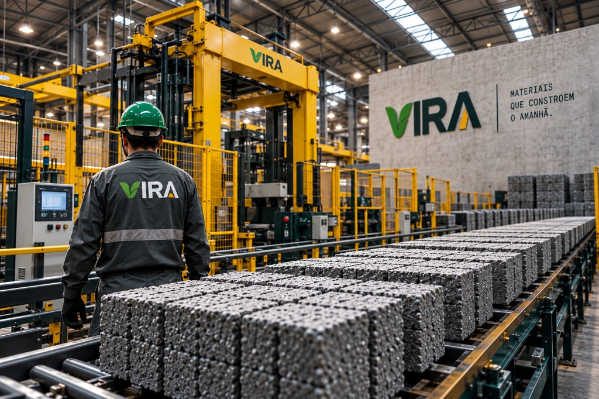
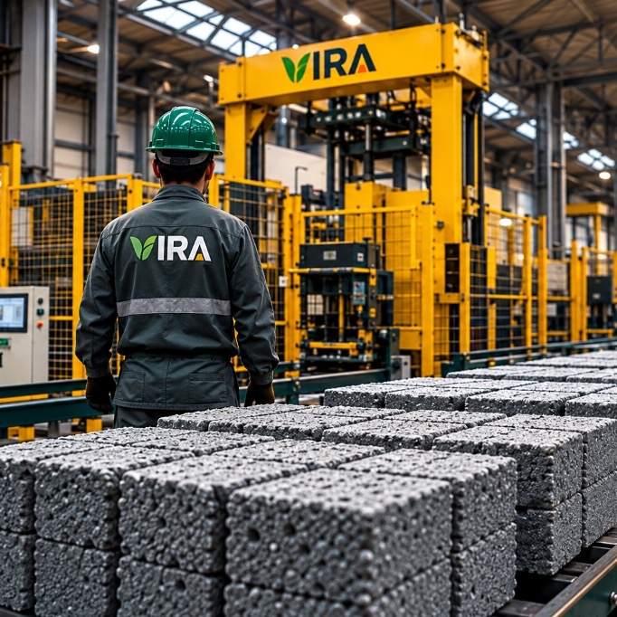
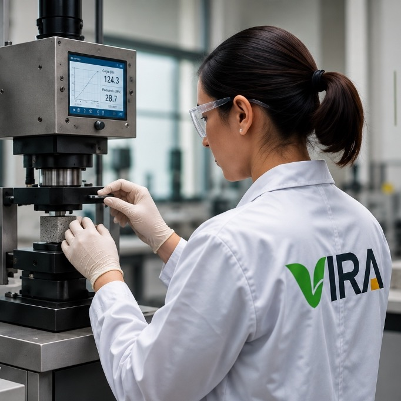
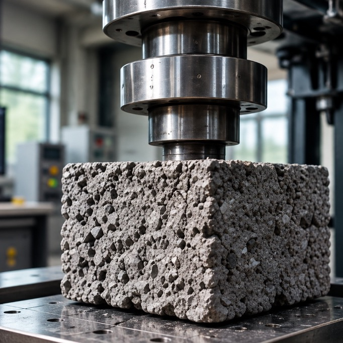
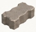
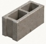
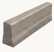

01ORIGEM
Tudo começa quando o resíduo volta a ter valor.

Transformamos plástico pós-consumo e coprodutos minerais em materiais circulares de alto desempenho para arquitetura, infraestrutura e cidades.
CONHECER PRODUTOS→Sobre a VIRA
A VIRA é uma indústria de materiais circulares que transforma resíduos plásticos e coprodutos minerais em componentes de alto desempenho. Unimos engenharia de materiais, produção industrial e rastreabilidade para criar materiais duráveis, especificáveis e capazes de permanecer em circulação.
Tudo começa quando o resíduo volta a ter valor.

Materiais são selecionados e preparados para uma nova cadeia produtiva.

Tecnologia transforma matéria recuperada em novos materiais.

A transformação retorna ao espaço urbano como infraestrutura.
Base técnica
Cada dado apresentado possui origem técnica identificável e pode ser associado ao respectivo ensaio.
50% plástico reciclado · 50% coproduto mineral.
Composição-base validada.
Cada produção possui identificação única.
Operação apoiada por geração fotovoltaica.
Resultados publicados somente após validação técnica.
Paver, blocos e guias produzidos com plástico reciclado e coprodutos minerais, para uma infraestrutura mais durável e de menor impacto.
Uma estrutura industrial preparada para transformar resíduos em materiais de alta performance para cidades mais resilientes.
DA ECONOMIA CIRCULAR
À INFRAESTRUTURA
EM LARGA ESCALA.

Capacidade industrial para atender demandas de infraestrutura urbana.

Matriz energética apoiada por geração fotovoltaica e sistemas eficientes.
Cada lote é monitorado com rastreabilidade e documentação técnica.

Ensaios e validações garantem desempenho e durabilidade.

Na VIRA, unimos tecnologia, energia limpa e engenharia de processos para entregar materiais que constroem cidades melhores.
Calculadora de matéria
Dimensione a área e visualize a matéria recuperada. Cada produto VIRA combina, em massa, 50% plástico pós-consumo e 50% escória industrial.
50% polímeros recuperados50% coproduto mineral
estimativa sobre a composição-base
estimativa sobre a composição-base
massa total estimada
aguardando metodologia documentada
— AGENDA 2030
A atuação da VIRA se conecta a seis Objetivos de Desenvolvimento Sustentável — da valorização do trabalho à transformação das cidades.


Renda e fortalecimento da cadeia de reciclagem.

Tecnologia industrial aplicada à circularidade.

Materiais para espaços urbanos mais resilientes.

Resíduos mantidos em circulação produtiva.

Potencial de redução de pressão sobre recursos e emissões, sujeito à metodologia aplicável.

Cooperativas, indústria e cidades conectadas.
— IMPACTO
Mais que materiais, geramos oportunidades. Fortalecemos cooperativas, valorizamos catadores e impulsionamos uma economia circular que inclui pessoas e transforma cidades.
— RECICLAGEM QUE INCLUI. CIDADES QUE AVANÇAM.
— PROCESSO
Transformamos resíduos em soluções reais
para cidades mais justas, sustentáveis e resilientes.
Conheça cada etapa da nossa cadeia de valor,
da coleta ao produto final.
RESÍDUOS
HOJE.
CIDADES
AMANHÃ.
Trabalhamos com cooperativas e catadores, garantindo renda e dignidade.
Os materiais são separados e preparados para processamento.
Transformamos plásticos e escória em novos materiais de alta performance.
Pavers, blocos e guias com qualidade, durabilidade e baixo impacto ambiental.
Infraestrutura sustentável para um futuro melhor para todos.
— ECONOMIA CIRCULAR EM MOVIMENTO.
RESÍDUOS
HOJE.
CIDADES
AMANHÃ.
Em calçadas, praças, ciclovias, estacionamentos, vias de tráfego leve e intervenções de requalificação urbana, em conformidade com as normas técnicas da ABNT aplicáveis.
VER APLICAÇÕESCada lote produzido possui rastreabilidade documentada, registrando a origem dos agregados reciclados, os ensaios laboratoriais e os volumes de resíduos desviados do aterro.
CONHECER O PROCESSOA dosagem é calibrada por engenharia de materiais para equilibrar resistência mecânica, absorção de água e durabilidade, assegurando desempenho compatível com materiais convencionais.
VER BASE TÉCNICASim. Nossos produtos são submetidos a ensaios de compressão, absorção e abrasão em laboratórios acreditados, emitindo laudos técnicos por lote de produção.
CONHECER METODOLOGIANossa equipe técnica apoia arquitetos, projetistas e órgãos públicos desde a compatibilização do memorial descritivo até a entrega das peças na obra.
FALAR COM A ENGENHARIASOLUÇÕES
PARA CIDADES
MELHORES.
Fale com o nosso time e descubra como o VIRA pode fazer parte do seu projeto. Atendemos órgãos públicos, empresas, construtoras e parceiros em todo o Brasil.



A VIRA transforma resíduos em infraestrutura para cidades mais resilientes através de engenharia, tecnologia e economia circular.